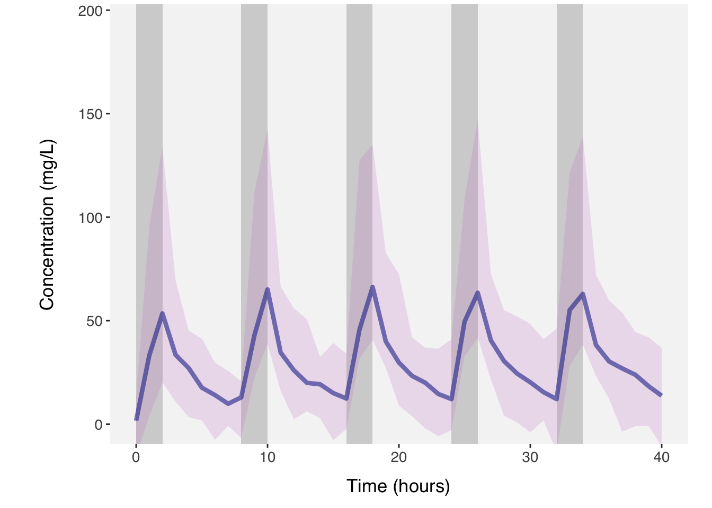

Code
library(PKPDsim)
library(PKPDplot)
library (ggplot2)
pk1 <- new_ode_model(model = "pk_2cmt_iv") # ceftazidime
pk2 <- new_ode_model(model = "pk_2cmt_iv") # avibactam
p <- list(
CL = 6.95,
V = 10.5,
Q = 31.5,
V2 = 7.57)
p2 <- list(
CL = 10.2,
V = 11.1,
Q = 5.44,
V2 = 6.91)
n <- 100
omega <- cv_to_omega(list(CL=0.423, V=1.05, Q=0.315, V2=1.10))
omega2 <- cv_to_omega(list(CL=0.591, V=1.07, Q=1.22, V2=6.91))
r1 <- new_regimen(
amt = 2000,
interval = 8,
n = 5,
type = "infusion",
t_inf = c(2,2,2,2,2)
)
r2 <- new_regimen(
amt = 500,
interval = 8,
n = 5,
type = "infusion",
t_inf = c(2,2,2,2,2)
)
dat <- sim(
ode = pk1,
parameters = p,
omega = omega,
n_ind = 20,
res_var = list(prop=0.1, add=7.5),
regimen = r1,
covariates = list("SCR" = new_covariate(value = 80)), output_include = list(parameters=TRUE, variable=TRUE, covariates=TRUE)
)
dat2 <- sim(
ode = pk2,
parameters = p2,
omega = omega2,
n_ind = 20,
res_var = list(prop=0.17, add=0.5),
regimen = r2,
covariates = list("SCR" = new_covariate(value = 80)), output_include = list(parameters=TRUE, variable=TRUE, covariates=TRUE)
)
plot(dat, show_population = list(obs = TRUE, spaghetti = FALSE, ci = TRUE,
median =TRUE, regimen = TRUE), ci = c(0.05, 0.95))